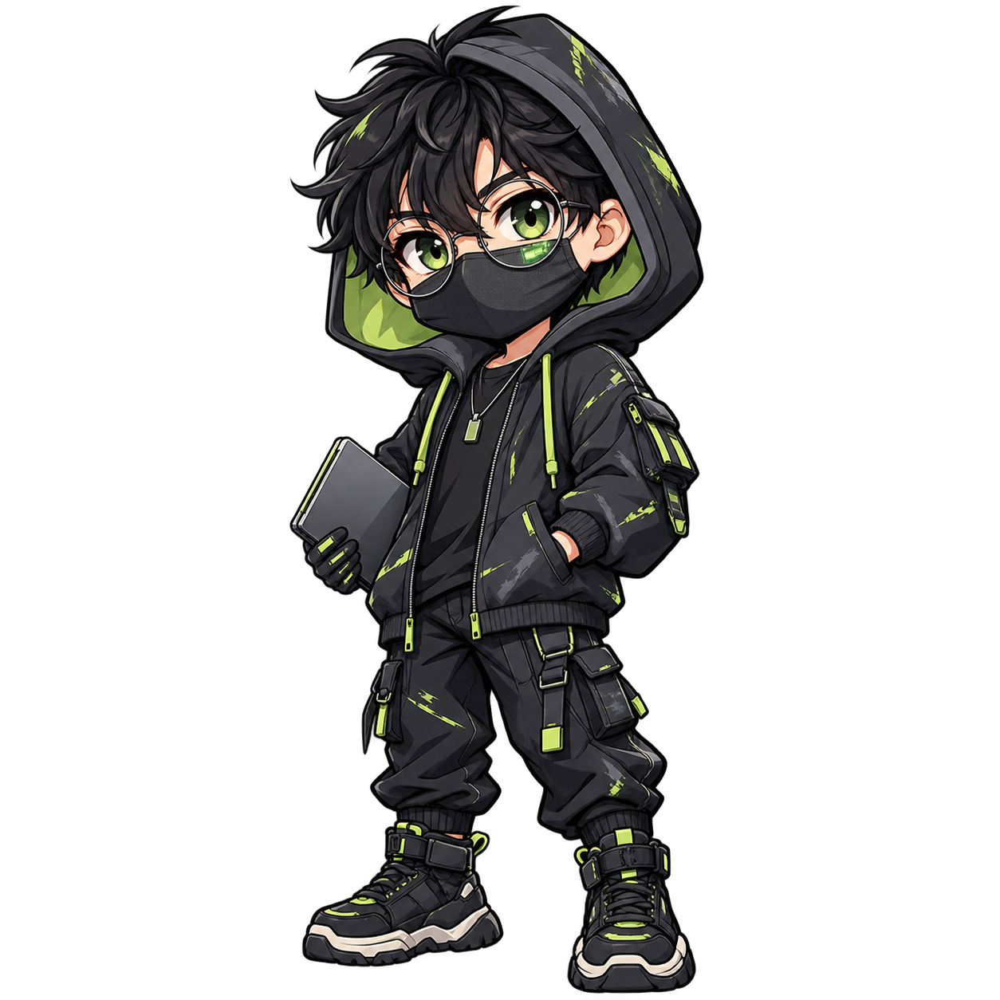

Área de estudo
Cybersecurityvictor@cyberlab~$ whoami
Victor
Entender o ataque.
Aprender a defender.
Estudante de cybersecurity. Entre logs, redes e linhas de comando, exploro Blue Team e Red Team em ambientes controlados.
- foco
- detecção / investigação / segurança ofensiva
- base
- Linux, Python e muita curiosidade
- status
- em aprendizado contínuo

Explore pelo terminal ou role a página.Tab completar ↑ histórico
comandos:somente neste site
sobre.md
cat sobre.md
PERFIL PESSOAL# O que me move
Curiosidade com método.
01 Observar. Questionar. Entender.
Transformar logs, tráfego de rede e eventos de endpoints em contexto para compreender ataques e fortalecer defesas.
Praticar técnicas ofensivas apenas em CTFs, máquinas próprias e laboratórios com autorização explícita.
02 Minha trilha de estudo
- [01]Blue Teammonitoramento · detecção · resposta
- [02]Red Teamreconhecimento · testes autorizados
- [03]Security LabLinux · Python · Wazuh
APRENDENDO EM PÚBLICO
open ./ferramentas-e-estudos
Defesa
Blue Team & SOCOfensiva
Red Team & CTFsFerramentas-base
Linux · Python · Wazuhradar/leituras
No meu radar.
Leituras para entender o cenário de ameaças. Fontes abertas, perguntas novas.
01 / 03
OWASP / Agentic AI / 2025
Quem protege os agentes de IA?
Injeção de instruções, abuso de ferramentas e permissões: novos riscos quando a IA deixa de apenas responder e passa a agir.
- Agentic AI
- Prompt injection
- Privilégios
02 / 03
Microsoft / Digital Defense Report / 2025
Identidades sob ataque
Password spray, roubo de sessão e infostealers mantêm credenciais e acessos no centro da defesa.
- Infostealers
- MFA
- Passkeys
03 / 03
ENISA / Threat Landscape / 2025
Ransomware & exposição
Phishing, falhas exploradas e dependências de terceiros continuam abrindo caminho para intrusão e extorsão.
- Ransomware
- Vulnerabilidades
- Supply Chain
Referências de estudo, não projetos de minha autoria. Cada entrada abre a publicação oficial.
Também estou construindo meu acervo.Write-ups e um guia de cybersecurity no meu GitHub.
Ver meus repositórios ↗ferramentas/
Do alerta
à resposta.
Minha trilha conecta telemetria, análise e testes para entender o ataque e fortalecer a defesa.
Monitorar
Coletar eventos, reconhecer o comportamento normal e dar contexto aos alertas que importam.
Investigar
Correlacionar logs, pacotes e indicadores para formular hipóteses e preservar evidências.
Testar
Simular técnicas em ambientes autorizados, validar controles e documentar formas de correção.
- WazuhSIEM · XDR
- NmapNetwork discovery
- WiresharkPacket analysis
- Burp SuiteWeb security
- SuricataIDS · IPS · NSM
- MITRE ATT&CKTactics · techniques
-
 LinuxSecurity lab
LinuxSecurity lab
- PythonAutomation · parsing
estudos/laboratório
Um comando de cada vez.
Ferramentas e fundamentos que pratico em laboratórios controlados para aprender defesa, ataque e investigação.
01
Sistemas & terminal
Linux & Shell
Comandos, permissões, processos e automação.Automação & análise
Python
Scripts, parsing de logs e automação de tarefas repetitivas.SIEM & XDR
Wazuh
Telemetria, alertas, integridade de arquivos e vulnerabilidades.Descoberta de rede
Nmap
Hosts, portas e serviços em redes próprias ou autorizadas.Análise de tráfego
Wireshark
Captura, filtros, protocolos e investigação de pacotes.Segurança web
Burp Suite
Inspeção de HTTP e testes manuais em aplicações de laboratório.Táticas & técnicas
MITRE ATT&CK
Uma linguagem comum para mapear comportamento adversário e detecções.IDS · IPS · NSM
Suricata
Monitoramento de rede, regras e detecção de tráfego suspeito.rede/referências
$ explore --community br
Ninguém aprende
sozinho.
Uma constelação de brasileiras e brasileiros que fortalecem tecnologia, educação, código aberto e segurança digital. Arraste a esfera e selecione um perfil para conhecer sua história.
Segurança, código aberto e educação.
Referências que compartilham conhecimento.
↔ Arraste para girar
↵ Selecione uma pessoa para saber mais